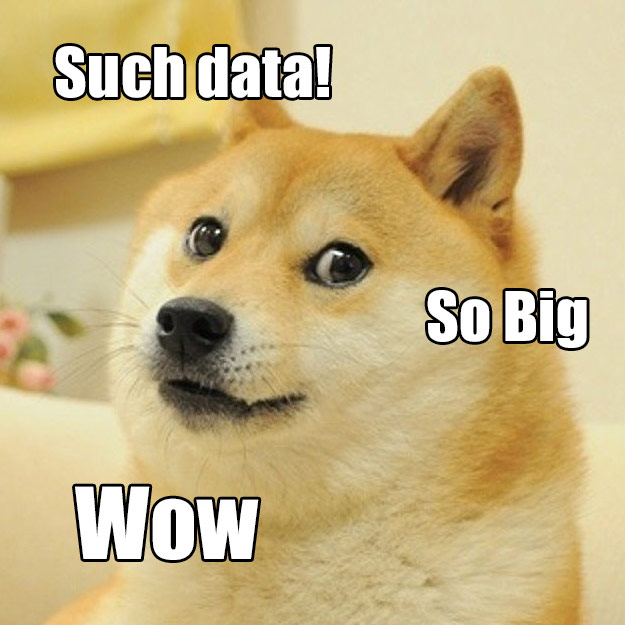

You don’t have Big Data…
“Big Data”, to paraphrase Douglas Adams, “is Big. You won’t believe how vastly, hugely, mind-bogglingly big it is. I mean you may think there’s a lot of data in Wikipedia but that’s just peanuts to Big Data.” And that’s where a lot of people tend to make a mistake when it comes to Big Data; they assume that “a lot” of data is “big” therefore they must be dealing with Big Data. But we had a lot of data long before we ever had Big Data… so where did Big Data come from?
Why Do We Keep Big Data, Anyway?
Back in the 1990s, people began realizing that it had become feasibly quite cheap to digitally store every little bit of data – cheaper than it had ever been to store it on paper. When something becomes cheap enough, it can become practically mandatory to do. There seems to be a human instinct to store up every last piece of information “just incase” we needed it in future, and when it became so cheap to do, people thought “why not”?
Scientists had already had to face up to their desire to save every bit of data from experiments: in a 1990 American Scientist article, “Saving All The BitsBut storage is cheap and the more sets of data you have, the more value you can get from comparing the sets for trends. The switching between TV channels data isn’t worth much per record, but pull that information together with scheduling and advertising data and look at it as an aggregate data set and suddenly you are able to understand how an audience behaves and that data then begins to yield useful and valuable insights for advertisers and program makers.
{kind=link}
As for Internet of Things light switch and door data, the kind of data generated by home automation systems… well, they have no identity associated with them, the best you might get from them is a time and a new status. You’d never think of retaining any of that information because there’s little to no value in each record and there is, potentially, a lot of data to be gathered. In fact the only way you can find any value in this data is by gathering massive amounts of it and sifting, filtering and digging through it for patterns.
A rule of thumb, when dealing with large quantities of records the smaller an individual record is, in terms of size and connectedness, the more likely it is to be “Big Data” rather than “Data”. The challenge for “Big Data Analytics” is about deriving meaning from the mass of small elements of information, possibly mixing in other richer data to provide context, and identifying patterns that are buried within it. It isn’t looking for a needle in a haystack; it’s more determining the nature of needles from a needle stack.
Recognizing Other Data of Value: Big Data vs Hot Data
A common mistake is to assume that because you not only have a lot of data, but also have a lot of access requests for that data, Big Data thinking should apply.
What they actually have though is “Hot Data” which is exactly where you shouldn’t be applying that thinking. “Hot Data” is a pure scalability issue where you want to build up your performance, reduce your latency and ensure that the data is visible to everyone who needs it.
“Big Data” data tends to be cold data, that is, data that you aren’t actively accessing and, apart from analyzing it, probably never will. In fact, apart from analysis, it could be regarded as frozen. It may be fed with fresh rapidly cooling records and the cooling records analyzed for up-to-date analysis, but the “Big Data” pool should be at least conceptually separated from the live data; mingling the two’s requirements can easily end up in an unsatisfactory lowest-common-capability situation where neither is optimal. Isolating hot and cold data is a good practice anyway; they have completely different economics of storage and application. However, there are folks who miss this and try and end up applying the “Big Data” hammer to the various sizes and shapes of data nails.
Don’t Devalue Your Other Data for the Sake of Big Data
Now, step back from your data and your applications and the chances are that the data that you currently have and care about, is warm or hot data, rather than “Big Data”. You may have sources within your systems which could become “Big Data” by setting out to “save all the bits”, you may have your eye on a future source of “Big Data”, or you may already have pools of cold data waiting to be turned into “Big Data” most likely on archival storage.
While you plan how to mine those potential “Big Data” resources, remember what you already have. You have your business’s data and all your existing demands to deliver that data quickly, efficiently and consistently, plus all the scaling issues that involves; “Big Data” practices are a poor fit for that data. Although you may have an awful lot of important, valuable data, you don’t have “Big Data”.